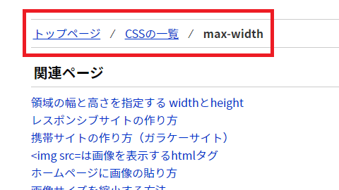
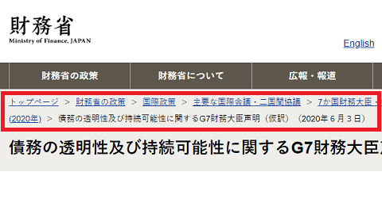
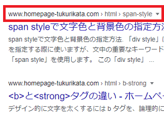
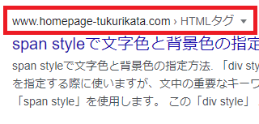

ぱんくずリストの作り方
ぱんくずリストは、サイト内で現在の位置を把握するためのナビゲーションです。
例えば、当サイトではトップページから深い階層へ移動するに従い、「CSSの一覧」や「max-width」などの文字列が出現していきますが、こちらが「ぱんくずリスト」になります。

この場合、「トップページ」内の「CSSの一覧」のカテゴリ内にある「max-width」のページが現在地という意味になります。
もし、そのページに求める情報がなかった場合、分岐点の「CSSの一覧」に戻り、違うページを探すことができます。ヘンゼルとグレーテルの童話のように、通った道にぱんくずを残しつつ、迷子にならずに深い階層のページへと移動するためのものです。
ページ数が多い公官庁やポータルサイトなどの大規模サイトの場合、たいていはこのぱんくずリストが設置されています。

一方、全ページをルートディレクトリに設置しているような、詳細なカテゴリ分けをしていないサイトでは特に設置する必要はありません。数ページ程度の会社ホームページなどでは迷子になることはないため、特に設置する必要はないでしょう。
ぱんくずリストの設置場所やリンクの文言
ぱんくずリストの設置場所は、一般的には記事タイトルの上部が多いですが、ページの下部に設置しても問題はありません。
また、サイト全体のスタート地点であるトップページ自体には設置せず、階層が深くなるにつれて「カテゴリ名」でキーワードを増やしていくのが一般的です。
トップページ / カテゴリ名1 / カテゴリ名2 / 個別ページ名
トップページへのリンクの文言については、「ホーム」や「トップ」あるいは「Home」など、サイト運営者によってまちまちです。
加えて、現在地の「個別ページ名」についてはリンク（パーマリンク）をせず、上記の「max-width」のようにキーワードのみを記載するケースが多いです。CMSの仕様によっては記事タイトル全文が出力されることもありますが、長くなる場合は省略しても問題ありません。
- 設置場所はページ上部、もしくはページ下部
- スタート地点のトップページには設置しないのが一般的
- トップページへのリンクは「ホーム」や「トップ」、「Home」などまちまち
- 上の階層には主に「カテゴリ名」でリンクする
- 現在地にはリンク（パーマリンク）をしない
- 現在地の文言はキーワードのみか記事タイトル全文、もしくは省略も可
- リスト間は「 / 」や「 > 」などで区切る
複数のカテゴリに当てはまり、そのページに至る経路が複数ある場合、「トップページ > カテゴリA・カテゴリB > 個別ページ名」などのように両方を記載するか、もしくはそのファイルが入っているカテゴリ名のみを掲載しておくとよいでしょう。
実際の作り方については、<div>や<nav>などにid属性を割り当てて設置するだけです。属性名には「pankuzu」や英語の「breadcrumb」など、わかりやすい名前をつけるとよいでしょう。
<div id="pankuzu">トップページ / カテゴリ名</div>
あとはCSS側で文字サイズを小さ目に調整しておくことをおすすめします。
URLとぱんくずリストの関係
ぱんくずリストは、サイトのURLの構造と対応させるのが望ましいです。
■URL
www.example.com/カテゴリ名1/カテゴリ名2/個別ページ名.html
■ぱんくずリスト
トップページ / カテゴリ名1 / カテゴリ名2 / 個別ページ名
訪問者のなかには、そのカテゴリの先頭部分へと移動する際、URLから直接アクセスする人も多いです。
上記の例でいえば、「カテゴリ名1」の先頭部分へと移動する際、ブラウザのURLから「カテゴリ名2」以下の部分を削除してページを更新し、「www.example.com/カテゴリ名1/」のURLへ直接アクセスする方法になります。
つまり、ぱんくずリストがなくても、URLの構造自体がその代わりになります。
当サイト運営者もぱんくずリストが設置されていない場合、上記のようなアクセスの仕方をしますが、たまに404が返ってくるサイトもあります。
例えば、Movable TypeなどのCMSで作成した場合、デフォルトで割り振られるパーマリンクのURLは「www.example.com/12/06/hoge.html」などの月別になるため、カテゴリ名とは無関係にURLが振られていることがあります。
また、ブログやCMSの仕様によっては、「news」や「article」など一つのフォルダに記事が一括で分類されており、そのページにたどり着くまでの経路とURLパスとの間に関連性がないことも多いです。
できるだけ、「ぱんくずリスト」と「フォルダ分け」を対応させておくのが望ましいですが、関連性がない場合にはURLのパスとは関係なしに、そのページにたどり着くまでの一般的な経路で作成するようにしましょう。
構造化データによるパンくずリストの作成方法
上記のようにサイト内に設置するほか、構造化データのぱんくずリストも作成しておくと、検索結果での表示を調整することができます。
例えば、構造化データを何も設定していないデフォルトの状態の場合、検索結果での当ホームページのぱんくずリストは以下のようになっています。
■デフォルトの状態

ちなみに、上記ページのURLはこちらです。
https://www.homepage-tukurikata.com/html/span-style.html
おそらくではありますが、デフォルトの状態の場合、GoogleではURLパスの構造から検索結果のパンくずリストを自動的に作成しているものと推測できます。
例えば、URLが以下のようになっていたとします。
www.example.com/sample/hoge.html
すると、このように表示されるケースが多いです。
www.example.com > sample > hoge ▾
「記事タイトル名」
当サイトでは、上記のURL構造でも「html」フォルダ経由の「span-style」ということで、ほぼ意図した通りに表示されてはいますが、これを調節して以下のようにしたいと考えたとします。
www.homepage-tukurikata.com > HTMLタグ > span style ▾
「span styleで文字色と背景色の指定方法 - ホームページの作り方」
そのため、構造化データを使って、各階層の「"name"」を以下のように設定しました。
１階層目．トップ
２階層目．HTMLタグ
３階層目. span style
この構造化データの実際のテンプレートについては、Googleの公式サイトをご参照ください。
→ パンくずリスト | Google 検索セントラル | Google Developers
けれども、実際のパンくずリストは以下のように表示されます。
■構造化データを設定した状態

デフォルトの状態と比べると、「span style」の箇所が抜けてしまいましたが、スペース的な関係のためか、構造化データではこのように表示されるのかもしれません。
おそらく、３階層目（※最後の階層）については「記事タイトル」をそのまま記入するケースが多いはずですので、以下のようにすると冗長になってしまい、表示スペースがなくなるのだろうと思います。
１階層目．ホーム
２階層目．サンプル
３階層目. 記事タイトル名
www.example.com > サンプル > 記事タイトル名 ▾
「記事タイトル名」
そのため、構造化データでパンくずリストを作成した場合、おおむね検索結果では以下のように、最後の階層の「name」で指定した文字列が省略されて表示されるものと思います。
www.example.com > サンプル ▾
「記事タイトル名」
ただし、場合によっては「記事タイトル」で表示されているケースもあるため、詳細な仕様は不明ですが、スペースに余裕がない場合は省略されて表示されるはずです。
また、実際のサイト上ではぱんくずリストを作成せず、構造化データのパンくず通りに通っても行き止まりだった場合、構造化データの設定は無視されることが多いと感じています。そのような場合、サイト内に通れる経路を作るなりして対応するとよいでしょう。
ぱんくずリスト設置によるSEO対策への影響
ぱんくずリストを設置する際、トップページへのアンカーテキストに注意することをおすすめします。「トップページ」や「ホーム」などの文字で全ページからリンクされるため、このアンカーテキストの影響を受けてしまうケースがあります。
自サイトを検索エンジンで検索してみて、通常の「個別ページ名 - サイト名」ではなく、「個別ページ名 - トップページ」などのような形で表示されていたとしたら、このぱんくずリストが悪影響を与えている可能性があります。
つまり、自サイトが「トップページ」という名前のサイト名として認識されてしまっていることになります。
特に、サイトタイトル名をテキストではなく、画像ロゴを使用している場合などはこのケースになることがたまにあります。画像のalt属性にサイトタイトル名を記述していても、テキストで記述されたぱんくずリストの方が強めに認識されてしまう傾向があります。
この場合、ぱんくずリストのアンカーテキストを単に「トップページ」とするのではなく、「サイト名 トップ」のような形で変更してみることをおすすめします。あるいは、英語の「Top」や「Home」などの形でずらしてみるのもよいかもしれません。
もしくは、リンクタグにtitle属性を付け加えるのも良いと思います。
<a href="http://www.example.com/" title="あなたのサイト名">ホーム</a>
または、head内のタイトルタグに「個別ページ名 - サイト名」と明確に記述するのでもよいかと思いますが、この場合でも「個別ページ名 - サイト名 - トップページ」などと表示されてしまうケースがあります。
いずれにしても、上記のように表示されてしまう場合は検索エンジンに「サイト名」がきちんと認識されていないことになります。
上記のような現象が実際に生じてしまうことから、検索エンジン対策とぱんくずリストは無関係ではないため、カテゴリ名の文言には注意して付けるとよいでしょう。